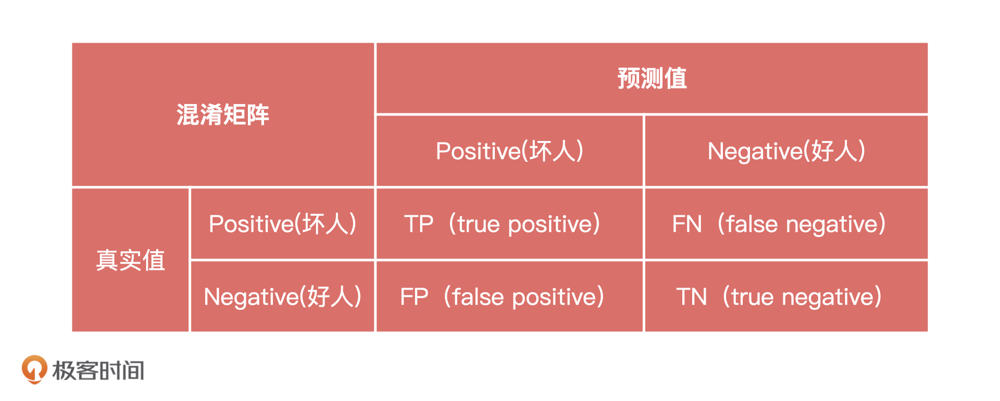
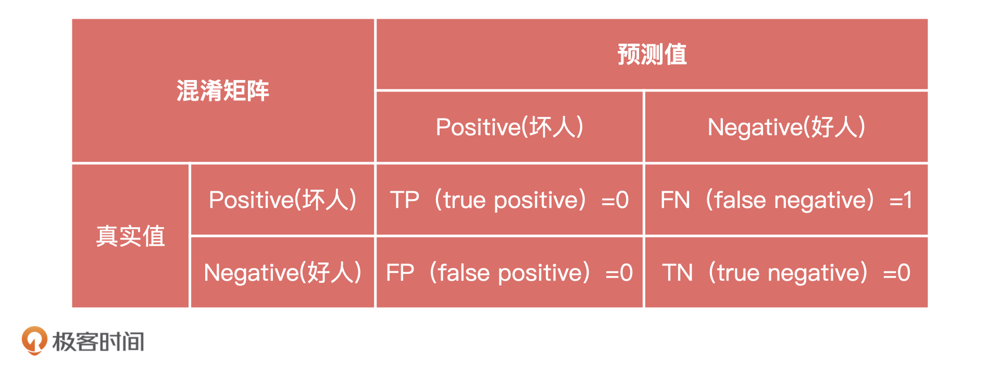
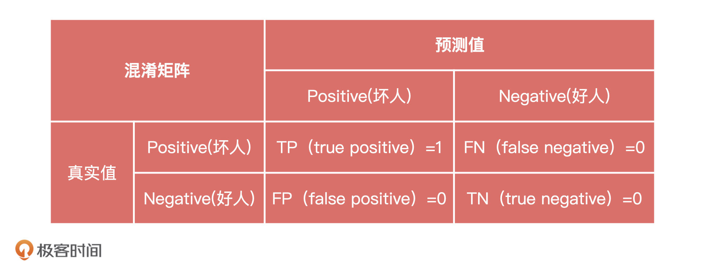
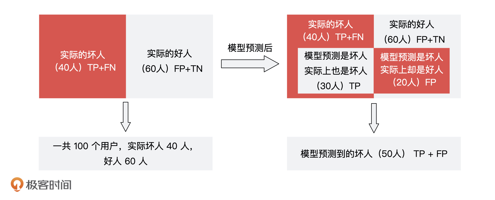
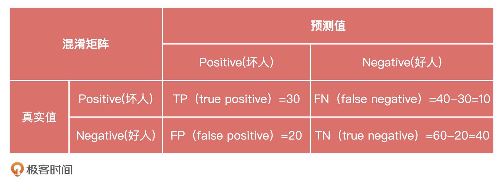
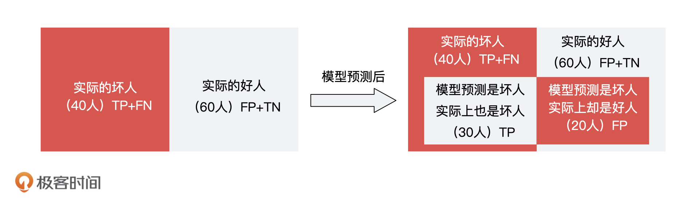
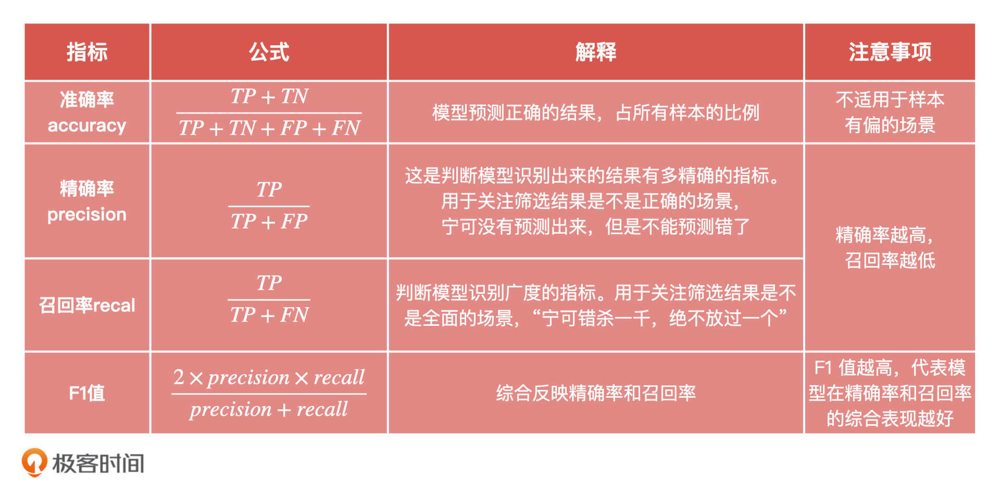

- 00 开篇词 你好，产品经理！你的未来价值壁垒在哪儿？.md.html
- 01 行业视角：产品经理眼中的人工智能.md.html
- 02 个人视角：成为AI产品经理，要先搞定这两个问题.md.html
- 03 技术视角：AI产品经理需要懂的技术全景图.md.html
- 04 过来人讲：成为AI产品经理的两条路径.md.html
- 05 通过一个 AI 产品的落地，掌握产品经理工作全流程.md.html
- 06 AI 模型的构建过程是怎样的？（上）.md.html
- 07 AI模型的构建过程是怎样的（下）.md.html
- 08 算法全景图：AI产品经理必须要懂的算法有哪些？.md.html
- 09 K近邻算法：机器学习入门必学算法.md.html
- 10 线性回归：教你预测，投放多少广告带来的收益最大.md.html
- 11 逻辑回归：如何预测用户是否会购买商品？.md.html
- 12 朴素贝叶斯：让AI告诉你，航班延误险该不该买？.md.html
- 13 决策树与随机森林：如何预测用户会不会违约？.md.html
- 14 支持向量机：怎么预测股票市场的涨与跌？.md.html
- 15 K-means 聚类算法：如何挖掘高价值用户？.md.html
- 16 深度学习：当今最火的机器学习技术，你一定要知道.md.html
- 17 模型评估：从一个失控的项目看优秀的产品经理如何评估AI模型？.md.html
- 18 核心技能：产品经理评估模型需要关注哪些指标？.md.html
- 19 模型性能评估（一）：从信用评分产品看什么是混淆矩阵？.md.html
- 20 模型性能评估（二）：从信用评分产品看什么是KS、AUC？.md.html
- 21 模型性能评估（三）：从股价预测产品看回归算法常用的评估指标.md.html
- 22 模型稳定性评估：如何用PSI来评估信用评分产品的稳定性？.md.html
- 23 模型监控：产品经理如何建设算法模型监控指标体系？.md.html
- 24 推荐类产品（一）：推荐系统产品经理的工作职责与必备技能.md.html
- 25 推荐类产品（二）：从0打造电商个性化推荐系统产品.md.html
- 26 预测类产品（一）：用户复购意向预测的底层逻辑是什么？.md.html
- 27 预测类产品（二）：从0打造一款预测用户复购意向的产品.md.html
- 28 预测类产品（三）：从0打造一款“大白信用评分产品”.md.html
- 29 自然语言处理产品：从0打造一款智能客服产品.md.html
- 30 AI产品经理，你该如何提升自己的价值？.md.html
- 31 AI产品经理面试，这些问题你必须会答！.md.html
- 春节加餐1 用户增长模型：怎么利用AI技术判断新渠道性价比？.md.html
- 春节加餐2 一次答疑，带你回顾模型评估的所有基础概念.md.html
- 期中周测试题 ，你做对了吗？.md.html
- 期中答疑 AI产品经理热门问题答疑合集.md.html
- 结束语 唯一不变的，就是变化本身！.md.html
- 捐赠
19 模型性能评估（一）：从信用评分产品看什么是混淆矩阵？
你好，我是海丰。
这节课，我们来学习分类模型的评估指标。上节课我们说了，分类模型的性能评估指标有混淆矩阵、\(KS、AUC\)等等。混淆矩阵是其中最基础的性能评估指标，通过它，我们可以直观地看出二分类模型预测准确和不准确的结果具体有多少，而且像是\(KS、AUC\)这些高阶的评估指标也都来自于混淆矩阵。
比如说，对信用评分这样典型的分类问题进行评估，其实就是要知道一个人信用的好坏。通过混淆矩阵，我们就能知道这个信用评分能够找到多少坏人（召回率），以及找到的坏人中有多少是真的坏人（精确率）。
因此，要对分类模型的性能进行评估，我们一定要掌握混淆矩阵。接下来，我们就通过一个信用评分产品的例子来详细说一说，混淆矩阵是什么，以及相关指标的计算方法。
什么是混淆矩阵？
信用评分的产品指的是利用客户提交的资料和系统中留存的客户信息，通过模型来评估用户信用情况的模型。信用评分主要应用于信贷场景中，对用户和中小企业进行信用风险评估。
假设，你的算法团队做了一个信用评分产品，分数范围是 [0, 100]。同时，算法团队给出一个参考阈值，60分以下的人逾期概率远高于 60 分以上的人群。
这个时候，你可以抽取一部分用户用于验证模型的效果。但是，这些用户必须是已经具有信贷表现的，否则我们无法通过它们确定模型有效性。我们把从来没有逾期的用户定义为“好人”，逾期用户定义为“坏人”。
假设我们抽取了 100 个测试用户，向信用评分模型中输入这一百个测试用户的信贷信息（用户身份证号/手机号码）以后，我们能得到100个模型的预测结果，以及每个用户的评分。结合算法团队给出的参考阈值，我们把信用分小于等于 60 的人定义为“坏人”，大于 60 的人定义为“好人”。
这之后，我们就可以通过混淆矩阵，知道模型预测结果和实际结果的差距，从而判断模型性能的好坏了。
混淆矩阵有两个定义，分别是Positive和Negative，它们分别代表模型结果的好和坏。下表就是一个标准的混淆矩阵。其中，行表示真实值，列表示预测值。\(T\)代表模型预测对了，也就是预测值和实际值一样，\(F\)则相反。\(P\)就是Positive的缩写，我们可以理解为“坏人”，\(N\)就是Negative的缩写，我们可以理解为好人。这里要特殊说明一下，好人坏人的定义是为了方便我们理解的，一般教材上会说明Positive为正例，Negative为负例。

由此，我们可以总结出4种情况：
- \(TP\)是指模型预测这个人是坏人，实际上这个人是坏人，模型预测正确；
- \(FP\)是指模型预测这个人是坏人，实际上这个人是好人，模型预测错误；
- \(FN\)是指模型预测这个人是好人，实际上这个人是坏人，模型预测错误；
- \(TN\)是指模型预测这个人是好人，实际上这个人是好人，模型预测正确。
刚刚接触混淆矩阵的同学，可能还不能完全理解\(TP、FP\)代表什么。其实，我们也不需要对这4种情况死记硬背，只需要记住：\(T\)和\(F\)代表模型判断的对和错，\(P\)和\(N\)代表模型预测结果的好和坏。
我们每预测一个人，都可以得到这样一个混淆矩阵。
比如，用户张三实际是一个逾期用户，也就是“坏人”，但模型给出的评分是 80 分。这个时候，张三的混淆矩阵中\(FN=1\)，就代表模型预测错误。

再比如，用户李四也是一个逾期用户，但模型给出的评分是40分。这个时候，李四的混淆矩阵中\(TP=1\)，模型预测正确。

假设，这100个人里面实际有40个坏人，60个好人。模型一共预测出 50 个坏人，在这 50 个坏人中，有 30 个预测对了，20 个预测错了。

综合了这 100 个人的模型结果和实际的结果，我们就能得到一个如下的混淆矩阵：

我们当然希望所有测试的结果都是 \(TP\) 或者 \(TN\)，也就是模型预测每个人的结果都和实际结果是一致的。
但是，现实中不太可能存在这样的情况，而且单独看混淆矩阵，我们只能知道模型预测结果中有多少个\(TP\)和\(FP\)，没办法直接告诉业务方这个模型到底好不好。因此，为了能够更全面地评估模型，我们又在混淆矩阵的结果上，延伸出另外3个指标，分别是准确率、精确率和召回率。
混淆矩阵的指标：准确率、精确率、召回率
准确率（Accuracy）这个指标是从全局的角度判断模型正确分类的能力。对应到信用评分的产品上，就是评价模型预测对的人\(TP+TN\)，占全部人员\(TP+TN+FP+FN\)的比例。 极端情况下，模型所有人都预测对了，这个准确率就是100%。
准确率的计算公式是：\(accuracy = \\frac{TP+TN}{TP+TN+FP+FN}\)。
虽然通过准确率这个指标，我们可以直观评价模型正确分类的能力。但是，在样本不均衡的情况下，占比大的类别对评价结果的影响太大。比如说，100 个用户里有 90 个坏用户，当我们模型预测到 99 个坏用户的时候，它还能有 90% 的准确率。这肯定是不对的。
在这种情况下，我们还要借助精确率（Precision）。精确率是判断模型识别出来的结果有多精确的指标。对应到信用评分的产品上，就是模型找到的真的坏人（对应混淆矩阵中的\(TP\)）的比率占模型找到的所有坏人（对应混淆矩阵中的\(TP+FP\)）的比率。
精确率的计算公式是：\(precision =\\frac{TP}{TP+FP}\)。

除此之外，我们也要看召回率。召回率（Recall）也叫做查全率，是判断模型识别广度的指标。对应到信用评分的产品上，就是模型找到的真的坏人（对应混淆矩阵中的\(TP\)）占实际坏人\(（TP+FN）\)的比例。也就是看模型能识别出多少真正的坏人，模型认为的坏人占实际坏人的比率是多少，公式是：\(recall=\\frac{TP}{TP+FN}\)。
知道了模型的准确率、精确率、召回率的计算公式，我们通过刚才的混淆矩阵，就可以把它们分别计算出来了：
- 准确率 =\(\\frac{TP+TN}{TP+TN+FP+FN}=\\frac{30+40}{30+40+20+10}=70%\)
- 精确率 = \(\\frac{TP}{TP+FP}= \\frac{30}{30+20}= 60%\)
- 召回率 = \(\\frac{TP}{TP+FN}=\\frac{30}{30+10}= 75%\)
总的来说，准确率、精确率和召回率是混淆矩阵的三个基本指标。准确率可以从全局的角度描述模型预测正确的能力，精确率和召回率可以分别描述模型识别的精确度和广度。
在实际工作中，我们一般通过精确率、召回率就可以判断模型预测的好坏，因为召回率可以知道我们找到了多少想找到人，精确率可以知道，我们找到的人有多准。
不过，精确率和召回率实际上是一对矛盾的指标，精确率提升，召回率可能会随之降低。比如说，如果想要识别出来的坏人都是真的坏人，模型就很可能会因为保守而缩小自己识别的范围，这就会导致召回率的下降。
因此，我们不仅会一起来看这两个指标，也会把它们放到一起来提需求。比如说，我们会要求算法同学，在 30% 召回率下把模型的精确率提升5倍。
除此之外，还有一个指标可以综合反映精确率和召回率，它就是 \(F1\) 值，\(F1\) 值越高，代表模型在精确率和召回率的综合表现越好。
F1的计算公式：\(F1 = \\frac{2 \\times precision \\times recall}{precision + recall}\)。
不过，在实际对模型评估的时候，我们还是习惯看召回率和精确率，这两个指标给业务方去讲，也比较容易理解（不使用准确率是因为在样本偏差情况下，准确率反而不准确）。
最后，在使用这三个指标的时候，我还有几点建议：
- 准确率：理解成本最低，但不要滥用。在样本不均衡情况下，指标结果容易出现较大偏差；
- 精确率：用于关注筛选结果是不是正确的场景，宁可没有预测出来，也不能预测错了。 比如，在刷脸支付的场景下，我们宁可告诉用户检测不通过，也不能让另外一个人的人脸通过检测；
- 召回率：用于关注筛选结果是不是全面的场景，“宁可错杀一千，绝不放过一个”。 比如，在信贷场景下，我要控制逾期率，所以宁可把好用户拦在外面，不让他们贷款，也不能放进来一个可能逾期的用户。毕竟，用户一旦逾期，无法收回的本金产生的损失，比我多放过几个好用户带来的收益要多很多。
小结
混淆矩阵是分类模型评估的基础，准确率、精确率和召回率是从混淆矩阵衍生出来的评估指标。为了帮助你记忆，我把这些指标的公式、解释和注意事项都总结在了下面的表格里，方便你对比和回顾。

最后，我们要记住一点：在实际对分类模型性能进行评估的时候，我们一般会用精确率和召回率一起使用，比如，在召回率20%的基础上，达到精确率5%。但是，对于信用评分的模型，我们很少只用召回率和精确率这样的指标去做判断，而是用\(KS、AUC\)这样的指标进行判断。这些指标我们下节课会详细来讲。
课后讨论
刚才我们说，对于信用评分模型一般用\(KS、AUC\)这样的指标进行评估。你觉得，我们为什么不用准确率呢？
期待在留言区看到你的思考，我们下节课见！
© 2019 - 2023 Liangliang Lee. Powered by gin and hexo-theme-book.